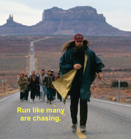

Index
D
|
G
|
I
|
M
|
R
|
S
|
W
D
draw() (read_fit.read_fit method)
(read_sequence.read_sequence method)
draw_xyplot() (in module read_fit)
(in module read_sequence)
G
getAltitudeList() (run_record.run_record method)
getAscendMeters() (run_record.run_record method)
getAverageAltitude() (run_record.run_record method)
getAverageCadence() (run_record.run_record method)
getAverageHeartRate() (run_record.run_record method)
getAveragePaceKm() (run_record.run_record method)
getAveragePaceMile() (run_record.run_record method)
getAverageSpeed() (run_record.run_record method)
getCadenceList() (run_record.run_record method)
getDateTimeList() (run_record.run_record method)
getDescendMeters() (run_record.run_record method)
getDistanceList() (run_record.run_record method)
getElapsedMinutesList() (run_record.run_record method)
getElapsedTimeList() (run_record.run_record method)
getEndTime() (run_record.run_record method)
getFastestKmTime() (run_record.run_record method)
getHeartRateList() (run_record.run_record method)
getListMeasures() (run_record.run_record method)
getMaximumCadence() (run_record.run_record method)
getMaximumHeartRate() (run_record.run_record method)
getMaximumPaceKm() (run_record.run_record method)
getMaximumPaceMile() (run_record.run_record method)
getMaximumSpeed() (run_record.run_record method)
getMinimumCadence() (run_record.run_record method)
getMinimumHeartRate() (run_record.run_record method)
getMinimumPaceKm() (run_record.run_record method)
getMinimumPaceMile() (run_record.run_record method)
getMinimumSpeed() (run_record.run_record method)
getPaceKmList() (run_record.run_record method)
getSpeedList() (run_record.run_record method)
getStartTime() (run_record.run_record method)
getTotalDistanceKm() (run_record.run_record method)
getTotalDistanceMeter() (run_record.run_record method)
getTotalDistanceMile() (run_record.run_record method)
getTotalTimePassed() (run_record.run_record method)
I
isValid() (read_fit.read_fit method)
M
main() (in module read_fit)
(in module read_sequence)
R
read_fit (class in read_fit)
(module)
read_sequence (class in read_sequence)
(module)
run_record (class in run_record)
(module)
S
size() (read_sequence.read_sequence method)
W
write_summary() (read_fit.read_fit method)
(read_sequence.read_sequence method)

myStravaRun
Navigation
Contents:
How To: A quick tutorial
Project Summary
Modules: run_record
Modules: read_fit
Modules: read_sequence
Related Topics
Documentation overview
Quick search